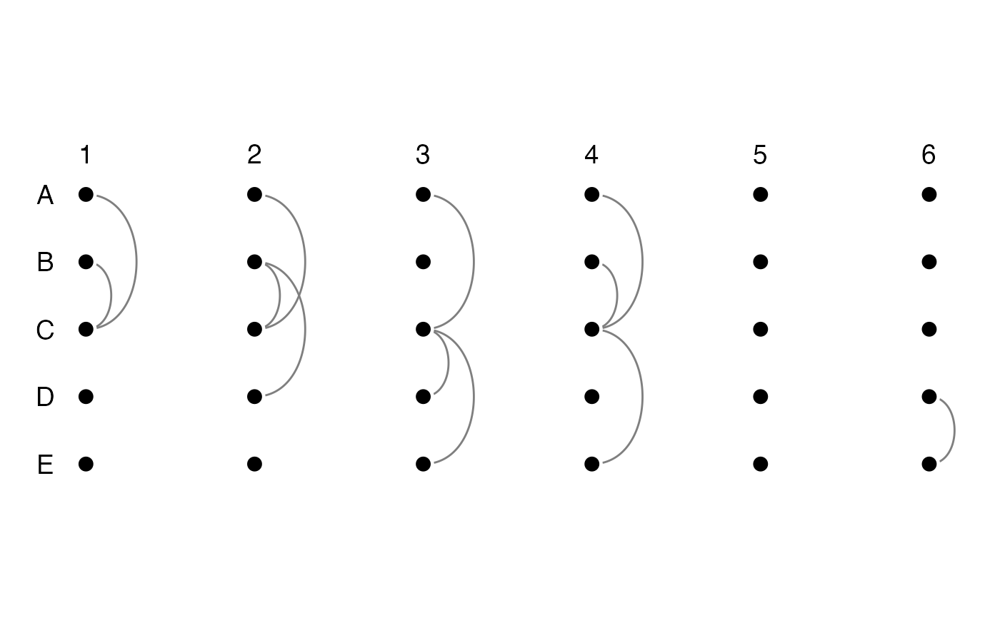

get_flat_unfolded_plot.RdThe function generates a ggraph plot with some sensible defaults. For full customisation, it is recommended to generated the ggraph layout from `get_unfolded_layout` and then customise the plot.
get_flat_unfolded_plot( edge.list, select_cols = NULL, nodes = NULL, vertical = FALSE, resize_ratio = NULL, enlarge_ratio = 1, ... )
| edge.list | data.frame or tibble containing the edge list. It needs at least three column: the column with edge sources, the edge targets, and the timestamps of each edge. The order of columns should be 'timestamp', 'source', 'target'. If the edge.list columns come in different orders, use `select_cols` to specify the right order. See the example for details. |
|---|---|
| select_cols | optional vector of 3 (2 for multi-graphs) elements
specifying which columns are the source,target, and attributes from which
building the graph. Otherwise Column 1 is assumed to be the source, column
2 the target, column 3 the attribute. In the case of multi-graphs, the
third element is not needed and the number of edges between each pair of
vertices is computed according to ' |
| nodes | optional vector containing all node names in case disconnected nodes should be included. |
| vertical | unfold vertically or horizontally? Defaults to FALSE (horizontal) |
| resize_ratio | ratio between horizontal and vertical dimensions of the grid layout. value < 1 gives a longer vertical side, >1 longer horizontal side. |
| enlarge_ratio | enlarge both y and x axis by this parameter. Defaults is 1. |
| ... | extra parameters passed to internal methods |
ggraph plot object with directed edges whose direction follows the arrow of time, aligned nodes in the order passed originally, node labels along the nodes and timestamps labels along the direction of time.
el <- data.frame( from = c('A','B', 'A','B','B', 'A','C','C', 'A','B','C', 'D'), to = c('C','C', 'C','C','D', 'C','D','E', 'C','C','E', 'E'), ts = c( 1, 1, 2, 2, 2, 3, 3, 3, 4, 4, 4, 6) ) get_flat_unfolded_plot(el, select_cols = 1:3)#> Warning: Removed 24 rows containing missing values (geom_text).#> Warning: Removed 25 rows containing missing values (geom_text).